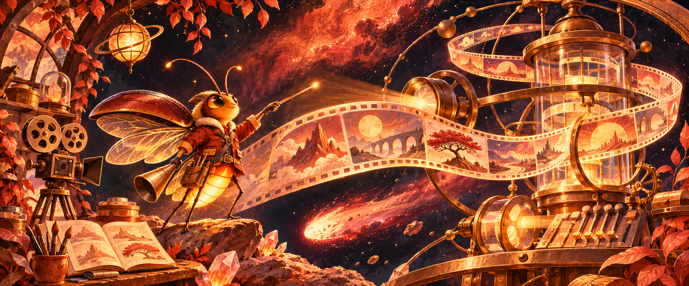
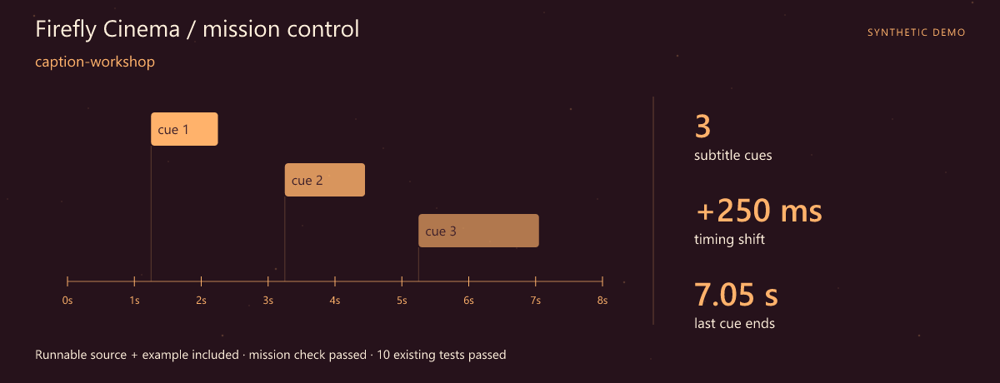
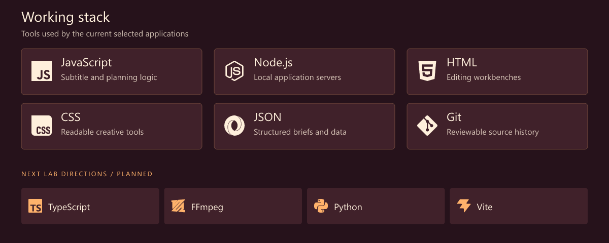
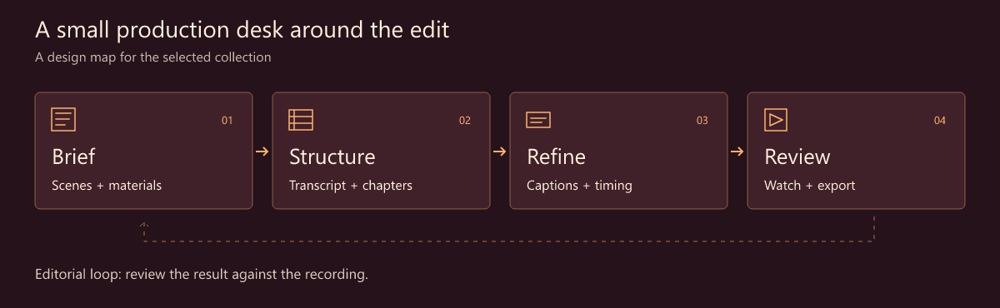
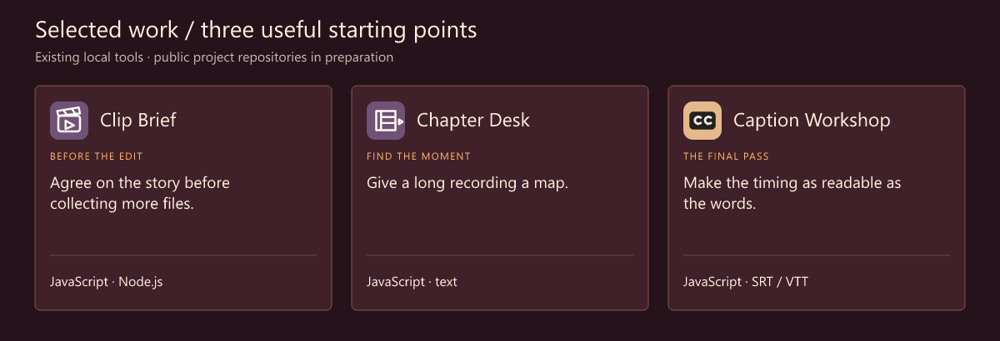
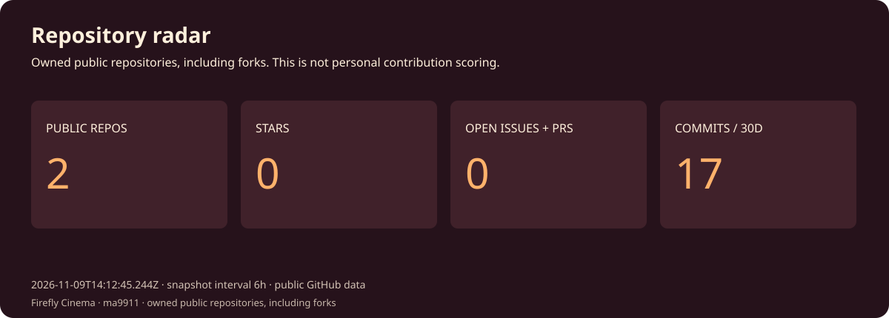
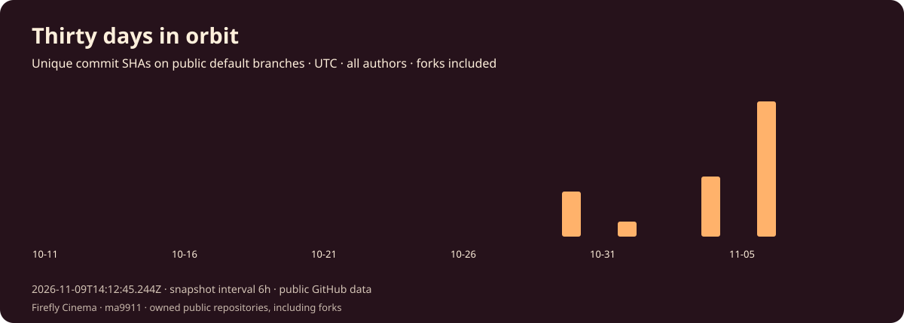
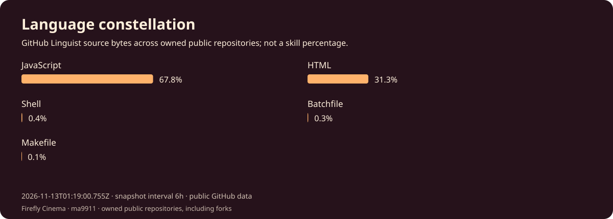
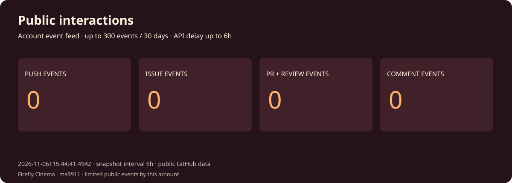

Mao Mao · Creative Tools Developer · JavaScript
Firefly Cinema · A little light around the edit.
Give the story a clearer path through the tools.
Download the runnable mission · Launch guide · Working stack · Selected work
Mission control

First launch: caption-workshop. A complete source snapshot, synthetic example and assertion script are included. The mission check and 10 existing tests passed. Try the mission · Snapshot and checked result.
I'm Mao Mao. My focus is software around the edit: a brief that makes the materials clear, chapters that help someone find a moment again, subtitles that deserve a careful final pass.
Creative work has plenty of small, precise tasks. A focused utility can keep those tasks visible while leaving room for editorial judgment.
What I focus on
- Subtitle tools. SRT/VTT editing, timing adjustments and an export worth reviewing.
- Story structure. Scenes, materials and chapter markers give a long recording a visible shape.
- Interfaces around the timeline. Keep the task small enough to understand and the source close enough to check.
Working stack

The upper panel shows technologies used by the selected tools. The lower row is the next lab track.
How I think about the work

Selected work
Three existing local tools form this curated collection. Their public project repositories are being prepared.

| Project / stack | Why it belongs here | Input → output |
|---|---|---|
| Clip Brief JavaScript · Node.js |
Agree on the story before collecting more files. Structure a video brief with scenes, timing and a list of required materials. | In: Brief + scene entries Out: A structured production plan |
| Chapter Desk JavaScript · text |
Give a long recording a map. Prepare chapter markers from an annotated transcript. | In: Annotated transcript Out: Chapter markers |
| Caption Workshop JavaScript · SRT / VTT |
Make the timing as readable as the words. Edit plain SRT/VTT cues, apply literal replacements or a millisecond shift, then export. | In: SRT or VTT subtitles Out: Reviewed SRT/VTT exports |
A tiny scene on the subtitle desk
1
00:00:01,200 --> 00:00:03,800
A small detail changes the rhythm.
Synthetic subtitle text. The next useful action is to inspect the cue, adjust it if needed and review it against a recording.
Code and activity




These charts record one successful daily statistics snapshot after the workflow is enabled. Four attempts per day provide retries. Snapshot commits are labelled automated and authored by the profile owner using a verified GitHub noreply identity, with github-actions[bot] as committer. Owner contribution attribution follows GitHub rules; repository charts still include all authors. The observation time is printed on every chart. Commits are unique default-branch SHAs across all authors and owned public repositories, including forks. Language bytes describe repositories, not personal skill. Public interactions are a limited event feed (up to 300 events / 30 days), not visitor analytics. API and image caches may delay updates.
Live data and scope · Portfolio website · Refresh setup
Next lab
- A clearer scene plan. Make materials and missing shots easier to inspect.
- A better chapter pass. Refine titles and the path back to a transcript moment.
- A comfortable subtitle review. Explore richer timing feedback and a typed editor boundary.
Start a conversation
A subtitle edge case, a hard-to-navigate transcript or a brief that needs a clearer structure is welcome as a concrete example.
Open the profile repository's issues · Browse the repositories
🎬 Between the captions and the final cut.
Fictional developer persona · AI-illustrated avatar. Curated tools retain original authors, licenses and commit history. Technology icons: Simple Icons.